create own typeface
 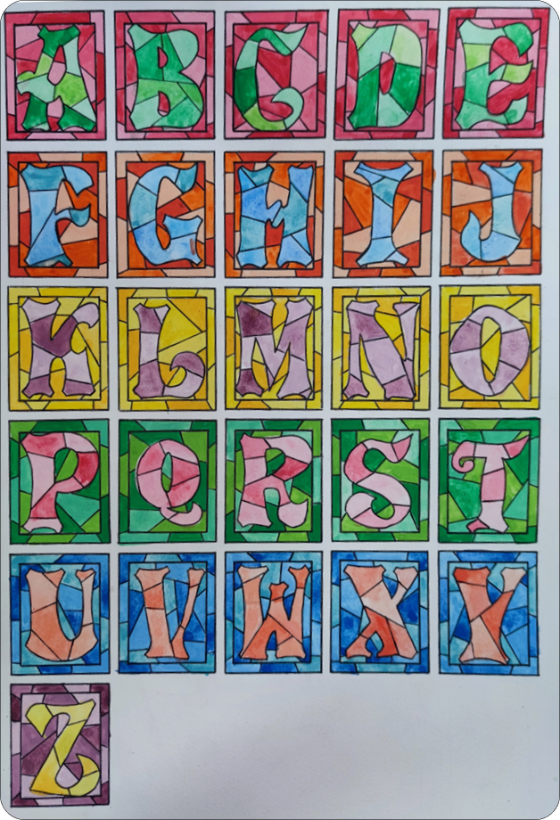
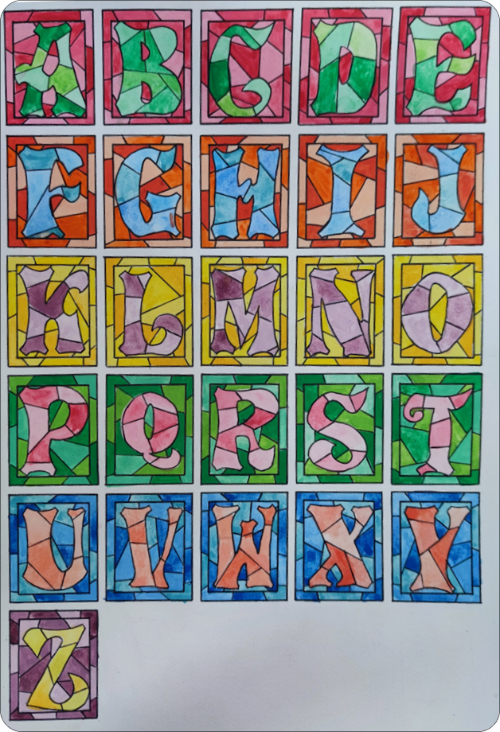
Holy Stained Glass Font.
This typeface is the first project that i done in my life. The idea is come from the church and im inspired by the stained glass. I was deeply and amazed by the holiness and beauties stain glass.
create own type-font with hand drawn.
progression as below.
 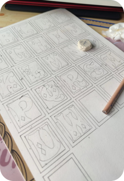
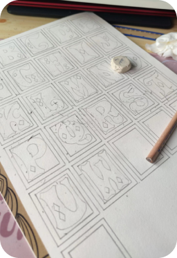
 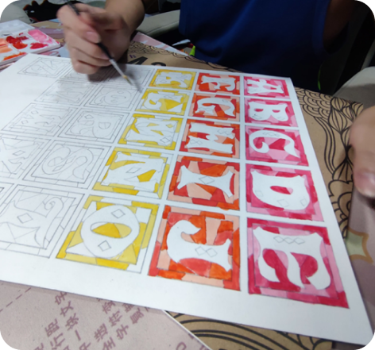
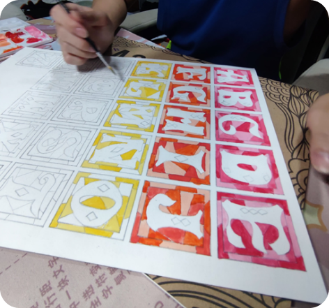
reference : Fancy Cap Font.
 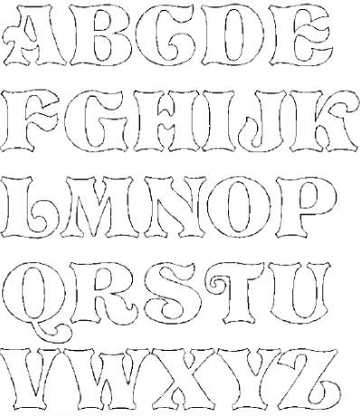
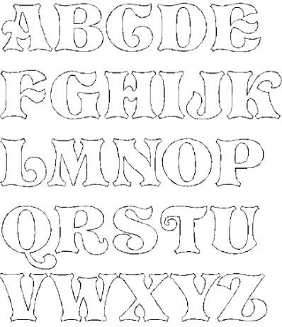
detail :
 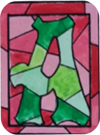
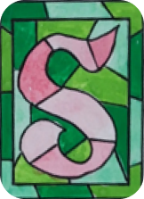
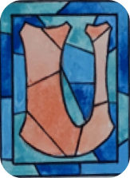
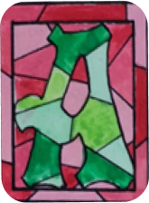
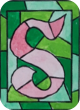
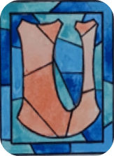